Common Problems
Online Auction
Dealing with Contention
Real-time Updates
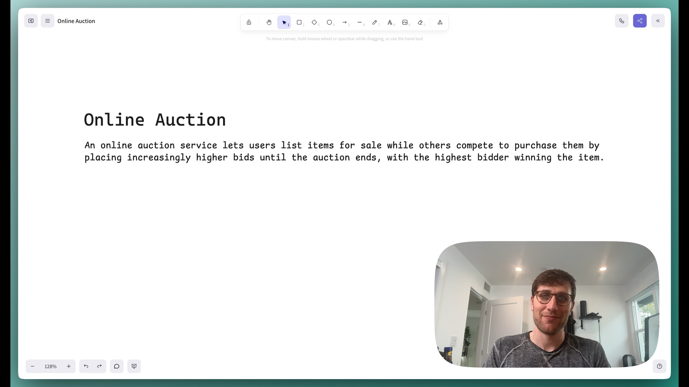
0:00
/
48:52
Understanding the Problem
🛍️ What is an online auction?
An online auction service lets users list items for sale while others compete to purchase them by
placing increasingly higher bids until the auction ends, with the highest bidder winning the item.
As is the case with all of our common question breakdowns, we'll walk through this problem step by step, using the Hello Interview System Design Framework as our guide. Note that I go into more detail here than would be required or possible in an interview, but I think the added detail is helpful for teaching concepts and deepening understanding.
Functional Requirements
Core Requirements
- Users should be able to post an item for auction with a starting price and end date.
- Users should be able to bid on an item. Where bids are accepted if they are higher than the current highest bid.
- Users should be able to view an auction, including the current highest bid.
Below the line (out of scope):
- Users should be able to search for items.
- Users should be able to filter items by category.
- Users should be able to sort items by price.
- Users should be able to view the auction history of an item.

Non-Functional Requirements
Before diving into the non-functional requirements, ask your interviewer about the expected scale of the system. Understanding the scale requirements early will help inform key architectural decisions throughout your design.
Core Requirements
- The system should maintain strong consistency for bids to ensure all users see the same highest bid.
- The system should be fault tolerant and durable. We can't drop any bids.
- The system should display the current highest bid in real-time so users know what they are bidding against.
- The system should scale to support 10M concurrent auctions.
Below the line (out of scope):
- The system should have proper observability and monitoring.
- The system should be secure and protect user data.
- The system should be well tested and easy to deploy (CI/CD pipelines)
On the whiteboard, this could be short hand like this:
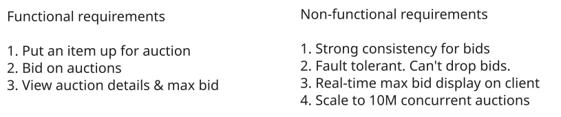
Requirements
The Set Up
Defining the Core Entities
Let's start by identifying the core entities of the system. We'll keep the details light for now and focus on specific fields later. Having these key entities defined will help structure our thinking as we design the API.
To satisfy our key functional requirements, we'll need the following entities:
- Auction: This represents an auction for an item. It would include information like the starting price, end date, and the item being auctioned.
- Item: This represents an item being auctioned. It would include information like the name, description, and image.
- Bid: This represents a bid on an auction. It would include information like the amount bid, the user placing the bid, and the auction being bid on.
- User: This represents a user of the system who either starts an auction or bids on an auction.
While we could embed the Item details directly on the Auction entity, normalizing them into separate entities has some advantages:
- Items can be reused across multiple auctions (e.g. if a seller wants to relist an unsold item)
- Item details can be updated independently of auction details
- We can more easily add item-specific features like categories or search
In an interview, I'm fine with either option - the key is to explain your reasoning.
Here is how it could look on the whiteboard:
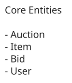
Core Entities
API or System Interface
Let's define our API before getting into the high-level design, as it establishes the contract between our client and system. We'll go through each functional requirement and define the necessary APIs.
For creating auctions, we need a POST endpoint that takes the auction details and returns the created auction:
POST /auctions -> Auction & Item
{
item: Item,
startDate: Date,
endDate: Date,
startingPrice: number,
}For placing bids, we need a POST endpoint that takes the bid details and returns the created bid:
POST /auctions/:auctionId/bids -> Bid
{
Bid
}For viewing auctions, we need a GET endpoint that takes an auctionId and returns the auction and item details:
GET /auctions/:auctionId -> Auction & ItemHigh-Level Design
1) Users should be able to post an item for auction with a starting price and end date.
First things first, users need a way to start a new auction. They'll do this by POSTing to the /auctions endpoint with the auction details, including information about the item they are selling.
We start by laying out the core components for communicating between the client and our microservices. We add our first service, "Auction Service," which connects to a database that stores the auction and item data outlined in the Core Entities above. This service will handle the reading/viewing of auctions.
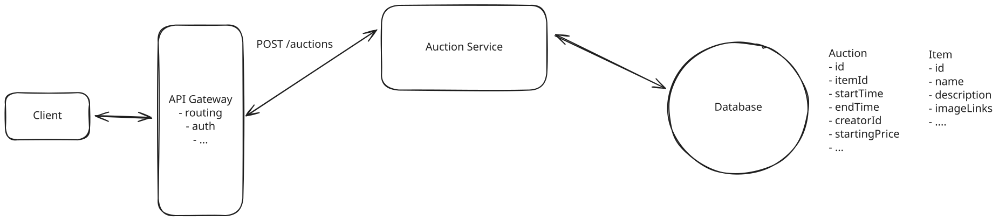
Create an Auction
- Client Users will interact with the system through the clients website or app. All client requests will be routed to the system's backend through an API Gateway.
- API Gateway The API Gateway handles requests from the client, including authentication, rate limiting, and, most importantly, routing to the appropriate service.
- Auction Service The Auction Service, at this point, is just a thin wrapper around the database. It takes the auction details from the request, validates them, and stores them in the database.
- Database The Database stores tables for auctions and items.
This part of the design is just a basic CRUD application. But let's still be explicit about the data-flow, walking through exactly what happens when a user posts a new auction.
- Client sends a POST request to /auctions with the auction details.
- API Gateway routes the request to the Auction Service.
- Auction Service validates the request and stores the auction and item data in the database.
- Database stores the auction and item data in tables.
Note that I don't mention anything about images here. This was intentional; it's not the most interesting part of the problem, so I don't want to waste time on it. In reality, we would store images in blob storage and reference them by URL in our items table. You can call this out in your interview to align on this not being the focus.
2) Users should be able to bid on an item. Where bids are accepted if they are higher than the current highest bid.
Bidding is the most interesting part of this problem, and where we will spend the most time in the interview. We'll start high-level and then dig into details on scale and consistency in our deep dives.
To handle the bidding functionality, we'll introduce a dedicated "Bidding Service" separate from our Auction Service. This new service will:
- Validate incoming bids (e.g. check bid amount is higher than current max)
- Update the auction with new highest bid
- Store bid history in the database
- Notify relevant parties of bid updates
We choose to separate bidding into its own service for several key reasons:
- Independent Scaling: Bidding traffic is typically much higher volume than auction creation - we expect ~100x more bids than auctions. Having a separate service allows us to scale the bidding infrastructure independently.
- Isolation of Concerns: Bidding has its own complex business logic around validation, race conditions, and real-time updates. Keeping it separate helps maintain clean service boundaries.
- Performance Optimization: We can optimize the bidding service specifically for high-throughput write operations, while the auction service can be optimized for read-heavy workloads.
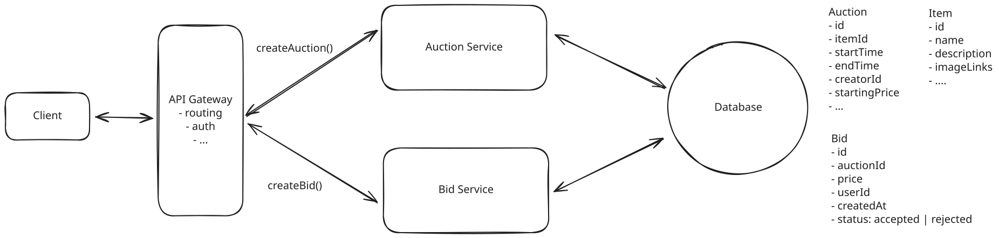
Place Bids
In the simple case, when a bid is placed, the following happens:
- Client sends a POST request to /auctions/:auctionId/bids with the bid details.
- API Gateway routes the request to the Bidding Service.
- Bidding Service queries the database for the highest current bid on this auction. It stores the bid in the database with a status of either "accepted" (if the bid is higher than current highest) or "rejected" (if not). The service then returns the bid status to the client.
- Database bids are stored in a new bids table, linked to the auction by auctionId.
When I ask this question, many candidates suggest storing just a maxBidPrice field on the auction object instead of maintaining a bids table. While simpler, this violates a core principle of data integrity: avoid destroying historical data.
Overwriting the maximum bid with each update means permanently losing critical information. This makes it impossible to audit the bidding process, investigate disputes, or analyze patterns of behavior. Inevitably, a user is going to complain that their bid was not recorded and that they should have won the auction. Without a complete audit trail, you have no way to prove them wrong.
3) Users should be able to view an auction, including the current highest bid.
Users need to be able to view an auction for two reasons:
- They want to learn about the item in case they decide they're interested in buying it.
- They want to place a bid, so they need to know the current highest bid that they need to beat.
These two are similar, but have different requirements. The first is a read-only operation. The second requires real-time consistency.
We'll offload the depth of discussion here to our deep dives, but let's outline the basic approach which ensures that the current highest bid is at least reasonably up-to-date.
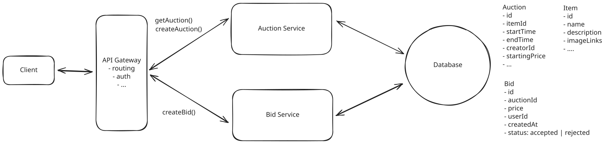
View Auction
When a user first goes to view an auction, they'll make a GET request to /auctions/:auctionId which will return the relevant auction and item details to be displayed on the page. Great.
What happens next is more interesting. If we never refresh the maximum bid price, then the user will bid based on a stale amount and be confused (and frustrated) when they are told their bid was not accepted. Especially in an auction with a lot of activity, this is a problem. To solve this, we can simply poll for the latest maximum bid price every few seconds. While imperfect, this ensures at least some degree of consistency and reduces the likelihood of a user being told their bid was not accepted when it actually was.
Potential Deep Dives
With the high-level design in place, it's time to go deep. How much you lead the conversation here is a function of your seniority. We'll go into a handful of the deep dives I like to cover when I ask this question but keep in mind, this is not exhaustive.
1) How can we ensure strong consistency for bids?
Ensuring the consistency of bids is the most critical aspect of designing our online auction system. Let's look at an example that shows why proper synchronization is essential.
Pattern: Dealing with Contention
Online auctions are a classic example of the dealing with contention pattern. When multiple users bid on the same auction simultaneously, we face race conditions and need to ensure only one bid wins. This requires careful coordination using techniques like optimistic concurrency control, row locking, or caching strategies to manage competition for the same resource.
Example:
- The current highest bid is $10.
- User A decides to place a bid of $100.
- User B decides to place a bid of $20 shortly after.
Without proper concurrency control, the sequence of operations might unfold as follows:
- User A's Read: User A reads the current highest bid, which is $10.
- User A's Write: User A writes their bid of $100 to the database. The system accepts this bid because $100 is higher than $10.
- User B's Read: User B reads the current highest bid. Due to a delay in data propagation or read consistency issues, they still see the highest bid as $10 instead of $100.
- User B's Write: User B writes their bid of $20 to the database. The system accepts this bid because $20 is higher than $10 (the stale value they read earlier).
As a result, both bids are accepted, and the auction now has two users who think they have the highest bid.
- A bid of $100 from User A (the actual highest bid).
- A bid of $20 from User B (which should have been rejected).
This inconsistency occurs because User B's bid of $20 was accepted based on outdated information. Ideally, User B's bid should have been compared against the updated highest bid of $100 and subsequently rejected.
There is an answer to this question which asserts that strong consistency is actually not necessary. I see this argument periodically from staff candidates. Their argument is that it doesn't matter if we accept both bids. We just need to rectify the client side by later telling User B that a bid came in higher than theirs and they're no longer winning. The reality is, whether User A's or User B's bid came in first is not important (unless they were for the same amount). The end result is the same; User A should win the auction.
This argument is valid and requires careful consideration of client-side rendering and a process that waits for eventual consistency to settle before notifying any users of the ultimate outcome.
While this is an interesting discussion, it largely dodges the complexity of the problem, so most interviewers will still ask that you solve for strong consistency.
Great, we understand the problem, but how do we solve it?
Approach
One initial approach might be to use row-level locking on the bids table to serialize bid processing for an auction. The idea is to lock all existing bid rows for an auction while we check the maximum and insert a new bid:
- Begin a transaction: Start a database transaction to maintain atomicity.
- Lock all bid rows for the auction using SELECT ... FOR UPDATE: This locks all existing bids for the auction, preventing other transactions from modifying them until the current transaction is complete.
- Query the current maximum bid from the locked rows: Retrieve the highest bid currently placed on the auction.
- Compare the new bid against it: Check if the incoming bid amount is higher than the current maximum bid.
- Write the new bid if accepted: Insert the new bid into the bids table.
- Commit the transaction: Finalize the transaction to persist changes.
Here's what the SQL query could look like:
BEGIN;
-- Lock all existing bid rows for this auction
SELECT id, amount FROM bids
WHERE auction_id = :auction_id
FOR UPDATE;
-- Get current max (from the locked rows)
SELECT MAX(amount) AS max_bid FROM bids
WHERE auction_id = :auction_id;
-- Insert if the new bid beats the current max
INSERT INTO bids (auction_id, user_id, amount, bid_time)
VALUES (:auction_id, :user_id, :amount, NOW())
WHERE :amount > COALESCE(:max_bid, 0);
COMMIT;Challenges
This approach has significant drawbacks that make it unsuitable for production:
-
Doesn't actually prevent concurrent inserts: SELECT ... FOR UPDATE locks existing rows, but it doesn't block other transactions from inserting new rows into the bids table for the same auction. Two concurrent transactions could both read the same max bid, both pass the check, and both insert. This is exactly the race condition we're trying to prevent. You'd need additional mechanisms (like an advisory lock or a separate row to lock) to truly serialize access.
-
Performance and Scalability Issues: Locking all bid rows for an auction serializes a large portion of bid processing. As the number of bids per auction grows, you're locking more and more rows for each new bid. This creates a bottleneck with increasing latency and poor user experience.
-
Poor User Experience: The delays introduced by lock contention and serialized processing result in slow response times or timeouts when placing bids. This is unacceptable in a competitive bidding environment where users expect real-time responsiveness.
In general, this is a big no-no. You want to use row locking sparingly and with optimizations to ensure that a) you lock as few rows as possible and b) you lock rows for as short of a duration as possible. We don't respect either of these principles here.
Approach
The next thing most candidates think of is to cache the max bid in memory. They realize that the main issue with the above approach is that we are holding the lock on a large number of rows for a reasonable duration, since we need to query the bid table to calculate the max bid each time.
To avoid this, we can cache the max bid in memory in something like Redis. Now, the data flow when a bid comes in looks very different:
- Read cache: Read the max bid for the given auction from Redis.
- Update cache: If the new bid is higher, update the cache with the new max bid.
- Write bid: Write the bid to the database with a status of accepted or rejected.
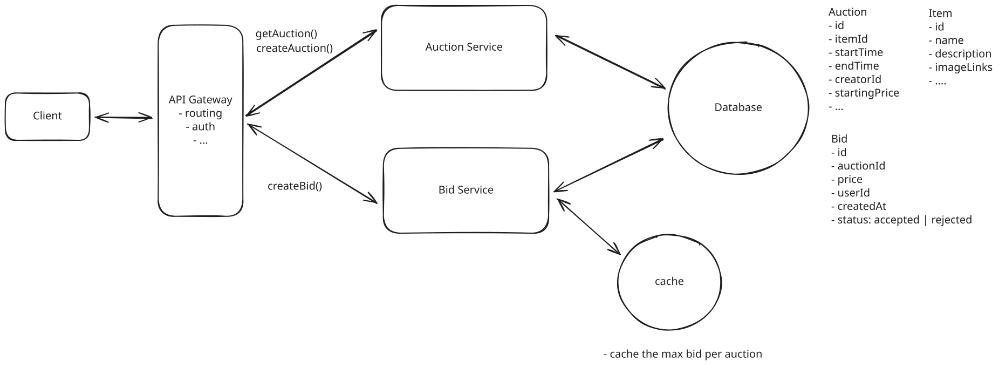
Cache max bid
Challenges
We solved one problem, but created another. Now we've moved this from a consistency problem within the database to a consistency problem between the database and the cache. We need a couple things to be true:
-
We need the cache read and cache write to happen atomically so we don't have a race condition like in our initial scenario. Fortunately, Redis is single-threaded and supports atomic operations. We can use a Lua script to ensure our read-modify-write (compare-and-set) sequence happens as one atomic operation. Note that Redis MULTI/EXEC alone wouldn't work here since it can't read a value and conditionally write based on it within the same transaction:
-- Lua script to atomically compare and set max bid local current_max_bid = tonumber(redis.call('GET', auction_key) or '0') local proposed_bid_amount = tonumber(proposed_bid) if proposed_bid_amount > current_max_bid then redis.call('SET', auction_key, proposed_bid_amount) return true else return false end -
We need to make sure that our cache is strongly consistent with the database. Otherwise we could find ourselves in a place where the cache says the max bid is one thing but that bid is not in our database (because of failure or any other issue). To solve this, we have a few options:
- Accept Redis as the source of truth during the auction and write to the database asynchronously. This trades consistency for performance but is pragmatic.
- Use optimistic concurrency with retry logic: update the cache atomically first, then write to the database. If the database write fails, roll back the cache update.
- Write to the database first, then update the cache. If the cache update fails, you can invalidate the cache entry and let it be repopulated on the next read.
The core challenge here is that there's no clean way to make Redis and a relational database transactionally consistent. Redis doesn't support distributed transaction protocols like two-phase commit. If you find yourself in an interview needing cross-system atomicity, consider whether you can restructure to keep everything in one system.
Approach
We solved the issue with locking a lot of rows for a long time by moving the max bid to a cache, but that introduced a new issue with consistency between the cache and the database. We can solve both problems by storing the max bid in the database. Effectively using the Auction table as our cache.
Now, our flow looks like this:
- Lock the auction row for the given auction (just one row)
- Read the max bid for the given auction from the Auction table.
- Write the bid to the database with a status of accepted or rejected.
- Update the max bid in the Auction table if the new bid is higher.
- Commit the transaction.
We now only lock a single row and for a short duration. If we want to avoid pessimistic locking altogether, we can use optimistic concurrency control (OCC).
OCC is ideal for our system because bid conflicts are relatively rare (most bids won't happen simultaneously on the same auction). Here's how it works:
- Read the auction row and get the current max bid (this is what is referred to as the 'version' with OCC)
- Validate that the new bid is higher than the max bid
- Try to update the auction row, but only if the max bid hasn't changed:
UPDATE auctions SET max_bid = :new_bid WHERE id = :auction_id AND max_bid = :original_max_bid - If the update succeeds, write the bid record. If it fails, retry from step 1.
This approach avoids locks entirely while still maintaining consistency, at the cost of occasional retries when conflicts do occur.
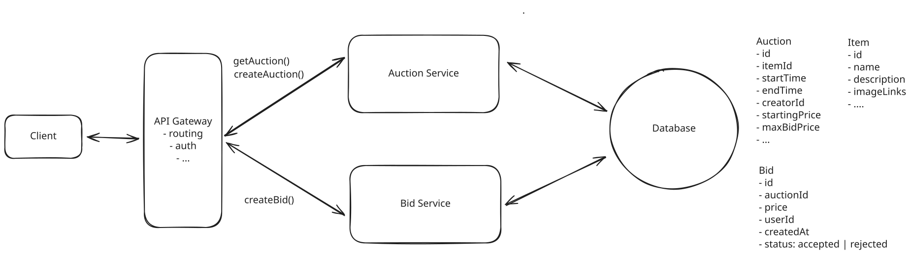
Cache max bid in DB
2) How can we ensure that the system is fault tolerant and durable?
Dropping a bid is a non-starter. Imagine telling a user that they lost an auction because their winning bid was "lost" - that would be catastrophic for trust in the platform. We need to guarantee durability and ensure that all bids are recorded and processed, even in the face of system failures.
The best approach here is to introduce a durable message queue and get bids into it as soon as possible. This offers several benefits:
-
Durable Storage: When a bid comes in, we immediately write it to the message queue. Even if the entire Bid Service crashes, the bid is safely stored and won't be lost. Think of it like writing your name on a waiting list at a restaurant - even if the host takes a break, your place in line is secured.
-
Buffering Against Load Spikes: Imagine a popular auction entering its final minutes. We might suddenly get thousands of bids per second - far more than our Bid Service can handle. Without a message queue, we'd have to either:
- Drop bids (unacceptable)
- Crash under the load (also unacceptable)
- Massively over-provision our servers (expensive)
With a message queue, these surge periods become manageable. The queue acts like a buffer, storing bids temporarily until the Bid Service can process them. It's like having an infinitely large waiting room for your bids. -
Ordering Within an Auction: Kafka guarantees message ordering within a single partition. By partitioning our topic by auctionId, all bids for the same auction land on the same partition and are processed in the order they were received. This is important for fairness - if two users bid the same amount, we want to ensure the first bid wins.
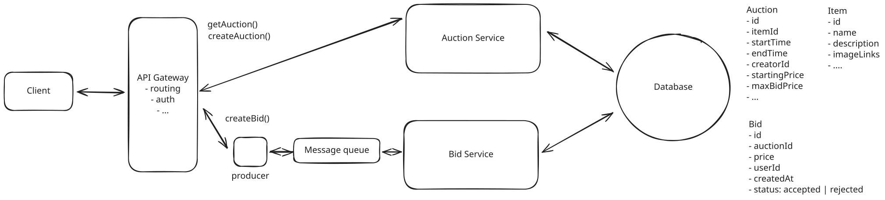
Fault tolerant system
For implementation, we'll use Kafka as our message queue. While other solutions like RabbitMQ or AWS SQS would work, Kafka is well-suited for our needs because:
- High Throughput: Kafka can handle millions of messages per second, perfect for high-volume bidding periods.
- Durability: Kafka persists all messages to disk and can be configured for replication, ensuring we never lose a bid.
- Partitioning: We can partition our queue by auctionId, ensuring that all bids for the same auction are processed in order while allowing parallel processing of bids for different auctions.
Here's how the flow works:
- User submits a bid through our API
- API Gateway routes to a producer which immediately writes the bid to Kafka
- Kafka acknowledges the write, and we can tell the user their bid was received
- The Bid Service consumes the message from Kafka at its own pace
- If the bid is valid, it's written to the database
- If the Bid Service fails at any point, the bid remains in Kafka and can be retried
While message queues do add some latency (typically 2-10ms under normal conditions), this tradeoff for durability is usually worth it. There are also multiple patterns for maintaining responsive user experiences while using queues, though each comes with different consistency/latency tradeoffs. For fear of going too deep here, we'll leave it at that. But I will discuss bid broadcasting later on when we discuss scale, which solves the asynchronous notification problem.
3) How can we ensure that the system displays the current highest bid in real-time?
Going back to the functional requirement of 'Users should be able to view an auction, including the current highest bid,' or current solution using polling, which has a few key issues:
- Too slow: We're updating the highest bid every few seconds, but for a hot auction, this may not be fast enough.
- Inefficient: Every client is hitting the database on every request, and in the overwhelming majority of cases, the max bid hasn't changed. This is wasteful.
Pattern: Real-time Updates
Keeping clients updated in real-time about the current highest bid is a perfect example of how to apply the real-time updates pattern.
We now need to expand the solution to satisfy the non-functional requirement of 'The system displays the current highest bid in real-time'.
Here is how we can do it:
Approach
Long polling offers a significant improvement over regular polling by maintaining an open connection to the server until new data is available or a timeout occurs. When a client wants to monitor an auction's current bid, they establish a connection that remains open until either the maximum bid changes or a timeout is reached (typically 30-60 seconds).
The server holds the request open instead of responding immediately. When a new bid is accepted, the server responds to all waiting requests with the updated maximum bid. The clients then immediately initiate a new long-polling request, maintaining a near-continuous connection.
The client side implementation typically looks something like this:
async function pollMaxBid(auctionId) {
const controller = new AbortController();
const timeoutId = setTimeout(() => controller.abort(), 30000);
try {
const response = await fetch(`/api/auctions/${auctionId}/max-bid`, {
signal: controller.signal
});
clearTimeout(timeoutId);
if (response.ok) {
const { maxBid } = await response.json();
updateUI(maxBid);
}
} catch (error) {
// Handle timeout or network error
}
// Immediately start the next long poll
pollMaxBid(auctionId);
}On the server side, we maintain a map of pending requests for each auction. When a new bid is accepted, we respond to all waiting requests for that auction with the new maximum bid.
Challenges
While long polling is better than regular polling, it still has some limitations. The server must maintain open connections for all clients watching an auction, which can consume significant resources when dealing with popular auctions. Additionally, if many clients are watching the same auction, we might face a "thundering herd" problem where all clients attempt to reconnect simultaneously after receiving an update.
The timeout mechanism also introduces a small delay - if a bid comes in just after a client's previous long poll times out, they won't see the update until their next request completes. This creates a tradeoff between resource usage (shorter timeouts mean more requests) and latency (longer timeouts mean potentially delayed updates).
Lastly, scaling becomes a challenge since each server needs to maintain its own set of open connections. If we want to scale horizontally by adding more servers, we need additional infrastructure like Redis or a message queue to coordinate bid updates across all servers. This adds complexity and potential points of failure to the system. More on this when we discuss scaling.
Approach
Server-Sent Events (SSE) provides a more elegant solution for real-time bid updates. SSE establishes a unidirectional channel from server to client, allowing the server to push updates whenever they occur without requiring the client to poll or maintain multiple connections.
When a user views an auction, their browser establishes a single SSE connection. The server can then push new maximum bid values through this connection whenever they change. This creates a true real-time experience while being more efficient than both regular polling and long polling.
The client-side implementation is remarkably simple:
const eventSource = new EventSource(`/api/auctions/${auctionId}/bid-stream`);
eventSource.onmessage = (event) => {
const { maxBid } = JSON.parse(event.data);
updateUI(maxBid);
};On the server side, we maintain a set of active SSE connections for each auction. When a new bid is accepted, we push the updated maximum bid to all connected clients for that auction. The server implementation might look something like this:
class AuctionEventManager {
private connections: Map<string, Set<Response>> = new Map();
addConnection(auctionId: string, connection: Response) {
if (!this.connections.has(auctionId)) {
this.connections.set(auctionId, new Set());
}
this.connections.get(auctionId).add(connection);
}
broadcastNewBid(auctionId: string, maxBid: number) {
const connections = this.connections.get(auctionId);
if (connections) {
const event = `data: ${JSON.stringify({ maxBid })}\n\n`;
connections.forEach(response => response.write(event));
}
}
}You could use websockets here as well, but SSE is arguably a better fit given the communication is unidirectional and SSE is typically lighter weight and easier to implement.
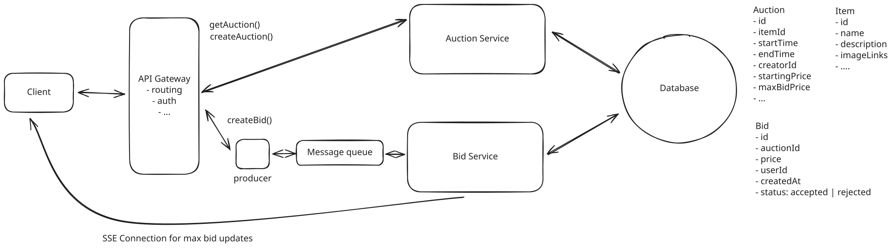
SSE
Challenges
The main challenge is scaling the real-time updates across multiple servers. As our user base grows, we'll need multiple servers to handle all the SSE connections. However, this creates a coordination problem: when a new bid comes in to Server A, there may be users watching that same auction who are connected to Server B. Without additional infrastructure, Server A has no way to notify those users about the new bid, since it only knows about its own connections.
For example, imagine User 1 and User 2 are both watching Auction X, but User 1 is connected to Server A while User 2 is connected to Server B. If User 3 places a bid that goes to Server A, only User 1 would receive the update - User 2 would be left with stale data since Server B doesn't know about the new bid.
We'll talk about the solution this this problem next as we get into scaling.
4) How can we ensure that the system scales to support 10M concurrent auctions?
When it comes to discussing scale, you'll typically want to follow a similar process for every system design question. Working left to right, evaluate each component in your design asking the following questions:
- What are the resource requirements at peak? Consider storage, compute, and bandwidth.
- Does the current design satisfy the requirement at peak?
- If not, how can we scale the component to meet the new requirement?
We can start with some basic throughput assumptions. We have 10M concurrent auctions, and each auction has ~100 bids over its lifetime. If the average auction runs for a week, then we get 10M auctions * 100 bids / 7 days ≈ 140M bids per day. 140M / 100,000 (rounded seconds in day) ≈ 1,400 bids per second. To account for peak traffic (popular auctions ending, evening surges), we should design for roughly 10x this, or about ~15K bids per second at peak.
Message Queue
Let's start with our message queue for handling bids. As discussed earlier, we partition our Kafka topic by auctionId to maintain ordering guarantees per auction. At ~15K requests per second at peak, a modest number of Kafka partitions can handle this throughput comfortably. Partitioning by auctionId also gives us natural parallelism, since different consumer instances can process bids for different auctions concurrently.
Bid Service
Next, we consider both the Bid Service (consumer of the message queue) and Auction Service. As is the case with almost all stateless services, we can horizontally scale these by adding more servers. By enabling auto-scaling, we can ensure that we're always running the right number of servers to handle the current load based on memory or CPU usage.
Database
Let's consider our persistence layer. Starting with storage, we can round up and say each Auction is 1kb. We'll say each Bid is 500 bytes. If the average auction runs for a week, we'd have 10M * 52 = 520M auctions per year. That's 520M * (1kb + (0.5kb * 100 bids per auction)) = 25 TB of storage per year.
That is a decent amount for sure, but nothing crazy. Modern SSDs can handle 100+ TBs of storage. While we'd want to ensure the basics with regards to some hot replication, we're not going to run out of storage any time soon. We'd be wise to shard, but the more pressing constraint is with regards to write throughput.
At ~15K writes per second during peak, we're pushing past what a single well-provisioned Postgres instance can handle. If we want to stick to our current solution for handling consistency, we'll need to shard our database by auction ID so that we can spread the write load across multiple instances. We don't have any worries about scatter-gathers since all reads/writes for a single auction are on the same shard.
SSE
Lastly, we talked about how our SSE solution for broadcasting new bids to users would not scale well. To recap, the problem is that when a new bid comes in, we need to broadcast it to all the clients that are watching that auction. If we have 10M auctions and 100M users, we could have 100M connections. That's a lot of connections and they wont fit on the same server. So we need a way for Bid Service servers to coordinate with one another.
The solution is Pub/Sub. Whether using a technology like Redis Pub/Sub, Kafka, or even a custom solution, we need to broadcast the new bid to all relevant servers so they can push the update to their connected clients. The way this works is simple: when Server A receives a new bid, it publishes that bid to the pub/sub system, essentially putting it on a queue. All other instances of the Bid Service are subscribed to the same pub/sub channel and receive the message. If the bid is for an auction that one of their current client connections is subscribed to, they send that connection the new bid data.
If you want to learn more about Pub/Sub checkout the breakdown of FB Live Comments where I go into more detail.
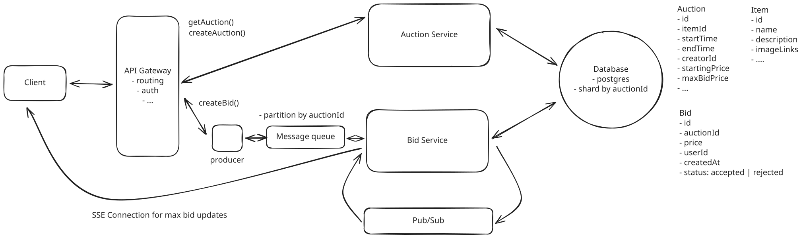
Scale
Some additional deep dives you might consider
There are a lot of possible directions and expansions to this question. Here are a few of the most popular.
- Dynamic auction end times: How would you end an auction dynamically such that it should be ended when an hour has passed since the last bid was placed? For this, there is a simple, imprecise solution that is likely good enough, where you simply update the auction end time on the auction table with each new bid. A cron job can then run periodically to look for auctions that have ended. If the interviewer wants something more precise, you could use a delayed task scheduler: when a new bid arrives, schedule a task to fire one hour later (using something like a database-backed job queue, a Redis sorted set with timestamps, or a service like AWS Step Functions with a Wait state). When the task fires, check if that bid is still the latest. If yes, end the auction.
- Purchasing: Send an email to the winner at the end of the auction asking them to pay for the item. If they fail to pay within N minutes/hours/days, go to the next highest bidder.
- Bid history: How would you enable a user to see the history of bids for a given auction in real-time? This is basically the same problem as real-time updates for bids, so you can refer back to the solution for that.
What is Expected at Each Level?
Mid-level
This is a more challenging question for a mid-level candidate, and to be honest, I don't typically ask it in mid-level interviews. That said, I'd be looking for a candidate who can create a high-level design and then reasonably respond to inquiries about consistency, scaling, and other non-functional requirements. It's likely I'm driving the conversation here, but I'd be evaluating a candidate's ability to problem-solve, think on their feet, and come up with reasonable solutions despite not having hands-on experience. For example, they may propose the caching solution without understanding the downsides of distributed transactions.
Senior
For senior candidates, I expect that they recognize that consistency and real-time broadcasting on bids are foundational to the problem and that they lead the conversation toward a solution that meets the requirements. They may not go into detail in all places, but they should be able to adequately arrive at a solution for the consistency problem and explain how bids will be kept up to date on the client. While they may not have time to discuss scale in depth, I expect they recognize many of the problems their system introduced.
Staff
For staff engineers, I expect them to demonstrate mastery of the core challenges around consistency and real-time updates while also proactively surfacing additional complex considerations. A strong candidate might, unprompted, discuss how ending auctions presents unique distributed systems challenges. They'd explain that while fixed end times seem straightforward, implementing dynamic endings (where auctions extend after late bids) requires careful orchestration to handle clock drift, concurrent termination attempts, and delayed valid bids. They might propose a dedicated scheduling service using tools like Apache Airflow or a custom queue-based solution to manage auction completions reliably. This kind of unprompted deep dive into adjacent problems—whether it's auction completion, fraud prevention, or system failure handling—demonstrates the technical breadth and leadership thinking expected at the staff level. Ultimately, the most important thing is that they lead the conversation, go deep, and show technical accuracy and expertise.
Test Your Knowledge
Answer the question below to find your gaps.
Question 1 of 15
Which concurrency control method avoids holding database locks?
1
Optimistic concurrency control
2
Exclusive locking
3
Table-level locking
4
Pessimistic locking